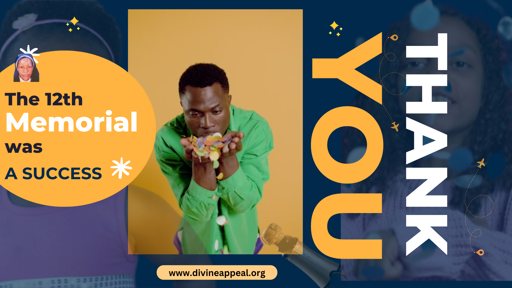

Sr Anna Ali
Have You Read The Divine Appeals?
The Divine Appeals are a compilation of urgent messages given by Jesus to the visionary Sr Anna Ali of The Most Holy Eucharist

Given by Jesus, For All Of Us
The message of the Divine Appeals is a message of mercy that calls us to repentance, reparation and atonement for our sins. Jesus asks for sincere prayer for the conversion of humanity. He asks for consolation and adoration in the Most Holy Eucharist. He says, “In the Sacrament of My Love I must be exposed for as I am exposed I will pour the treasure of my Love and Mercy to the souls.”
About the mystic, Sr Anna Ali of The Most Holy Eucharist
Sr. Anna Ali was born on 29th December 1966 at Kipkelion in Kericho district as the first born child of the late Ali Abdulrahmani and Prisca Nyambura.
She attended Kipkelion Primary School and Koru Girls Secondary School where she obtained her Form Four Certificate. She entered the convent in 1986 in the Pious Union of Jesus the Good Shepherd Congregation. She made her first religious profession on 7th September 1991 in Rome. While in Rome she had her first vision of Jesus in early August 1987.
On Corpus Christi Thursday 1988, Jesus appeared to Sister Anna Ali in tears of blood. On both occasions she requested Jesus if she could photograph Him since she could not draw. Jesus allowed Himself to be photographed by Sr. Anna and gave the following reasons:
- "Listen to Me. I am above this earth. I allow Myself to be seen after many warnings" (12.15 a.m., 3rd April 1988);
- "I make Myself visible in order to bring back souls" (10th April 1988);
- "I love mankind and I make Myself visible in order to give My warnings of mercy" (12th April 1988)
- "Many do not listen to Me because they do not believe in My reality" (23rd April 1988).
The first Divine Appeal message was written on 8th September 1987 after Jesus instructed her to write the messages. She described that whenever Jesus came, He came with His own powerful light and the room was filled with a sweet fragrance, which remained in the room for a long time.
She left the Pious Union of Jesus the Good Shepherd in 1996 and became a hermit living under the care and spiritual guidance of Rev. Bishop Cornelius arap Korir of the Catholic Diocese of Eldoret. Sr. Anna Ali took private final vows with Rev. Bishop Cornelius arap Korir and took on the title of Sr. Anna Ali of the Most Holy Eucharist as instructed by Jesus in the Divine Appeal message of 15th October 1998.
For 25 years till her death, Sr. Anna Ali shed tears of blood every Thursday from midnight of every Wednesday to the whole of Thursday. This phenomena started after her vision of Jesus in tears of blood.

# VISIT BURNT FOREST
Burnt Forest is where the tomb of Sr Anna Ali is, and where she lived. It is also the HQ for small hosts
PLAN A TRIP WITH USDownload In Your Language
The Divine Appeal has been translated into 3+ languages
Download in Español
Provident nihil minus qui consequatur non omnis maiores. Eos accusantium minus dolores iure perferendis tempore et consequatur.
Descargar aquí.Download in Ikinyarwanda.
Kanda hano kugira ngo ushyireho ibyifuzo by'Imana mu Kinyarwanda.
Kuramo hanoFrequently Asked Questions
Use this section to familiarize yourself with quick and concise answers to common questions about Sr Anna Ali's work and mission her mission. If you dont see an answer to your questions, please dont hesitate to reach out to us using the contact form at the bottom of this page.
1. Is Sr Anna Ali a saint?
NO, she is not yet a church recognized saint. However, her canonization process is soon underway
2. Are the messages of the divine appeal authentic?
The messages are formally recognized by the catholic church, as evidenced by the imprimatur given by Bishop Korir
3. Is Sr Anna Ali still alive?
No. She passed away about 12 years ago and was buried at St Patrick's parish, Eldoret, Kenya.
4. How can I get access to the full message given by Jesus?
To access the full message, purchase a book called The Divine Appeals - which comes in 2 volumes. You can order right here on our website.
5. How can I visit her tomb?
Reach out to our team for directions and for other information about this
Latest Updates
Stay on top of what's happening at Burnt Forest
Prayer Cenacles
The 9th Vigil of Masses set for Aug 30th

Sr Anna Ali TV
The 12th Memorial was a success
Need Help?
Let us know how we can assist you to better live the message of The Divine Appeals
Address
Burnt Forest, Eldoret, Kenya
Call Us
+250 789 902 748
Email Us
info@example.com
Open Hours:
Mon-Sat: 11AM - 18PM